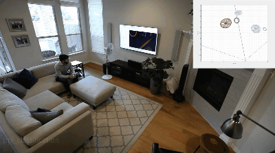

Sense and Direct HVAC Control with IWR68xx
===========
This lab showcases Texas Instrument's most accurate people tracking and counting software implemented on the TI IWR6843ISK EVM, an mmWave radar device. This lab also features classification, which can distiguish between people and non-human dynamic objects, such as fans. Finally, static people detection has been added, so the device will continue to track people who stand or sit still, as well as lay down. All of this runs on-board the IWR6843 sensor, eliminating the need for external processing. All of this data is output from the device, and visualization is included for the purpose of evaluation. This is ideal for indoor environments in the home or office, and since mmWave technology can see through materials like plastic, the sensor can easily be hidden inside appliances like HVAC units, televisions, and other common objects.
Features:
* Accurate People Counting and Tracking up to 8 people
* 10 meter range
* Static People Detection
* Classification

-----------
# Requirements
### Prerequisite
[[y! Run Out of Box Demo
Before continuing with this lab, users should first run the out of box demo for the EVM.
This will enable users to gain familiarity with the sensor's capabilities as well as the various tools used across all labs in the mmWave Industrial Toolbox. ]]
[[r! IWR6843 ES2.0 Only
This lab is only compatible with ES2.0 version of IWR6843. Check the device version on your IWR6843 using the on-chip device markings as shown below>
1. If line 4 reads `678A`, you have an ES2 device. In this case, this lab is compatible with your EVM.
2. If line 4 reads `60 GHZi`, you have an older ES1 device. In this case, the lab is NOT compatible with your EVM. ES2 IWR6843ISK/IWR6843ISK-ODS boards are orderable from the EVM link above.
<img src="images/iwr6843_silicon_revision.png" width="500"/>
]]
### Hardware
Item | Details
--------------------------|-----------------
Device | [IWR6843 Long Range Antenna Board](http://www.ti.com/tool/IWR6843ISK), and optionally, [Industrial mmWave Carrier Board](http://www.ti.com/tool/MMWAVEICBOOST).
Mounting Hardware | The EVM needs to be mounted at a height of ~1.5-2.5m with a slight downtilt. An [adjustable clamp style smartphone adapter mount for tripods](https://www.amazon.com/Vastar-Universal-Smartphone-Horizontal-Adjustable/dp/B01L3B5PBI/) and a [60-75" tripod](https://www.amazon.com/Neewer-Portable-centimeters-Camcorder-kilograms/dp/B01N6JCW8F/) can be used to clamp and elevate the EVM. This is only an example solution for mounting; other methods can be used so far as setup specifications are met.
Computer | PC with Windows 10. If a laptop is used, please use the 'High Performance' power plan in Windows.
Micro USB Cable | Due to the high mounting height of the EVM, an 8ft+ cable or USB extension cable is recommended.
Power Supply | 5V, 3A with 2.1-mm barrel jack (center positive). The power supply can be wall adapter style or a battery pack with a USB to barrel jack cable.
### Software
Tool | Version | Details |Download Link
----------------------------|---------------------------|--------------------|--------------
mmWave Industrial Toolbox | Latest | Contains pre-compiled binaries and visualizer for the lab | [mmWave Industrial Toolbox](http://dev.ti.com/tirex/explore/node?node=AJoMGA2ID9pCPWEKPi16wg__VLyFKFf__LATEST)
Uniflash | Latest | Uniflash tool is used for flashing TI mmWave Radar devices. | [Download offline tool](http://www.ti.com/tool/UNIFLASH) or use the [Cloud version](https://dev.ti.com/uniflash/#!/)
<a name="flash_the_evm"></a>
2. Flash the EVM
-----------
1. Set the device in flashing mode:
a. If using ISK standalone module, follow the instructions for [setting Modular EVM to flashing mode](../../../common/docs/hardware_setup/hw_setup_isk_ods_modular_mode_flashing.html)
b. If using ISK with ICBOOST, follow the instructions for [Hardware Setup of ICB for Flashing Mode](../../../common/docs/hardware_setup/hw_setup_mmwaveicboost_mode_flashing.html)
2. Follow the instruction to [Flash the mmWave Device](../../../common/docs/software_setup/using_uniflash_with_mmwave.html)
Image | Location
--------------------------|------------
Meta Image 1/RadarSS | `<mmwave_industrial_toolbox_install_dir>\labs\people_counting\68xx_Sense_and_Direct_HVAC_Control\prebuilt_binaries\sense_and_direct_68xx_lab.bin`
3. Physical Setup
-----------
1. Setup the device for functional mode
a. If using ISK standalone, follow the instructions for [setting Modular EVM to functional mode](../../../common/docs/hardware_setup/hw_setup_isk_ods_modular_mode_functional.html)
b. If using the ICBOOST, follow the instructions for [Hardware Setup of ICB for Functional Mode](../../../common/docs/hardware_setup/hw_setup_mmwaveicboost_mode_functional.html)
2. For best results, the EVM should be positioned high enough to be above the top of tracked objects and with a slight down tilt.
The aim is to position the EVM so that the antenna beam can encompass the area of interest.
If the down tilt is too severe, noise from ground clutter would increase and the effective sensing area would decrease.
If threre is no down tilt, counting performance would be worse for cases in which one person is in line with and shielded by another person.
Given the antenna radiation pattern of the EVM, consideration should be taken to not mount the EVM too close or oriented with beam directed to the ceiling as this can increase the noise floor and result in less optimal performance.
<img src="images/ifdm_setup/downtilt.jpg" width="700"/>
**Setup Requirements:**
* Elevate EVM: 2.0-2.5 m high
* Down tilt: ~15 degree
**Setup using suggested tripod and smartphone clamp mount:**
1. Screw on clamp mount to tripod
2. Clamp EVM across its width below power barrel jack to attach EVM
3. Adjust tripod head for ~15 degree down tilt (Tip: Bubble or level smartphone apps can be used to measure down tilt)
4. Plug in micro-usb and power supply to EVM
5. Extend tripod so that the EVM is elevated 2.0-2.5m from the ground
6. Position EVM and tripod assembly in desired location of room. The EVM should be positioned so that the 120 degree FOV of the EVM antenna encompasses the area of interest and points to the region in which people are expected to enter the space.
4. Run the Lab
-----------
To run the lab, launch and configure the visualizer which displays the detection and tracked object data received via UART. See the [instructions in the visualizer folder](../../visualizer/docs/ba_visualizer_user_guide.html)
Developer's Guide
===========
Build the Firmware from Source Code
-----------
### 1. Software Requirements
Tool | Version | Download Link
----------------------------|---------------------------|--------------
mmWave Industrial Toolbox | Latest | [mmWave Industrial Toolbox](http://dev.ti.com/tirex/#/?link=Software%2FmmWave%20Sensors%2FIndustrial%20Toolbox)
TI mmWave SDK | 3.5.x.x | [Link to Latest mmWave SDK](http://software-dl.ti.com/ra-processors/esd/MMWAVE-SDK/latest/index_FDS.html). To access a previous version of the mmWave SDK scroll to the bottom of the table and click the link under "MMWAVE-SDK previous release". Repeat to continue stepping back to previous versions.
Code Composer Studio | 8.3.1 | [Code Composer Studio v8](http://processors.wiki.ti.com/index.php/Download_CCS#Code_Composer_Studio_Version_8_Downloads)
TI SYS/BIOS | 6.73.01.01 | Included in mmWave SDK installer
TI ARM Compiler | 16.9.6.LTS | Included in mmWave SDK installer
TI CGT Compiler | 7.4.16 | Version 7.4.16 must be downloaded and installed. [Download link](https://www.ti.com/licreg/docs/swlicexportcontrol.tsp?form_type=2&prod_no=ti_cgt_c6000_7.4.16_windows_installer.exe&ref_url=http://software-dl.ti.com/codegen/esd/cgt_registered_sw/C6000/7.4.16)
XDC | 3.50.08.24 | Included in mmWave SDK installer
C64x+ DSPLIB | 3.4.0.0 | Included in mmWave SDK installer
C674x DSPLIB | 3.4.0.0 | Included in mmWave SDK installer
C674x MATHLIB (little-endian, elf/coff format) | 3.1.2.1 | Included in mmWave SDK installer
mmWave Radar Device Support Package | 1.6.1 or later | Upgrade to the latest using CCS update process (see SDK user guide for more details)
TI Emulators Package | 7.0.188.0 or later | Upgrade to the latest using CCS update process (see SDK user guide for more details)
Uniflash | Latest | Uniflash tool is used for flashing TI mmWave Radar devices. [Download offline tool](http://www.ti.com/tool/UNIFLASH) or use the [Cloud version](https://dev.ti.com/uniflash/#!/)
### 2. Import Lab Project
For the Sense and Direct HVAC Control lab, there are two projects, the DSS for the C674x DSP core and the MSS project for the R4F core, that need to be imported to CCS and compiled to generate firmware for the xWR6843.
[[b! Project Workspace
When importing projects to a workspace, a copy is created in the workspace. All modifications will only be implemented for the workspace copy. The original project downloaded in mmWave Industrial Toolbox is not touched.
]]
1. Start CCS and setup workspace as desired.
2. Import the project(s) specified below to CCS from the src/ folder. See instructions for importing [here](../../../../docs/readme.html#import-ccs-projects-from-the-mmwave-industrial-toolbox-into-code-composer-studio).
* **sense_and_direct_68xx_dss**
* **sense_and_direct_68xx_mss**
3. Verify that the import occurred without error: in CCS Project Explorer, both **68xx_pplcount_mss** and **68xx_pplcount_dss** should appear.
### 3. Build the Lab
The DSS project must be built before the MSS project.
1. Select the **sense_and_direct_68xx_dss** so it is highlighted. Right click on the project and select **Rebuild Project**. The DSS project will build.
2. Select the **sense_and_direct_68xx_mss** so it is highlighted. Right click on the project and select **Rebuild Project**. The MSS project will build, the the lab binary will be constructed automatically.
2. On successful build, the following should appear:
* In sense_and_direct_68xx_dss → Debug, **sense_and_direct_dss.xe674** (this is the C67x binary used for CCS debug mode)
* In sense_and_direct_68xx_mss → Debug, **sense_and_direct_68xx_mss.xer4f** (this is the Cortex R4F binary used for CCS debug mode) and **sense_and_direct_68xx_lab.bin** (this is the flashable binary used for deployment mode)
{{y Selecting Rebuild instead of Build ensures that the project is always re-compiled. This is especially important in case the previous build failed with errors.}}
[[r! Build Fails with Errors
If the build fails with errors, please ensure that all the software requirements are installed as listed above and in the mmWave SDK release notes.
]]
[[b! Note
As mentioned in the [Quickstart](#quickstart) section, pre-built binary files, both debug and deployment binaries are provided in the pre-compiled directory of the lab.
]]
{{y The DSS project must be built using compiler version 7.4.16.
To check the build settings, right click on the project to select **Show build settings...**.
Under the **General** tab, the **Advanced Settings** section has a drop down menu for **Compiler Version**.
Ensure that it reads **TI v7.4.16**. Using a 8.x compiler will not work. The project will compile without error but will not function correctly. [Download here if missing.](https://www.ti.com/licreg/docs/swlicexportcontrol.tsp?form_type=2&prod_no=ti_cgt_c6000_7.4.16_windows_installer.exe&ref_url=http://software-dl.ti.com/codegen/esd/cgt_registered_sw/C6000/7.4.16)
}}
### 4. Execute the Lab
There are two ways to execute the compiled code on the EVM:
* Deployment mode: the EVM boots autonomously from flash and starts running the bin image
* Using Uniflash, flash the **sense_and_direct_68xx_lab.bin ** found at `<PROJECT_WORKSPACE_DIR>\sense_and_direct_68xx_mss\Debug\sense_and_direct_68xx_lab.bin`
* The same procedure for flashing can be use as detailed in the Quickstart [Flash the EVM](#flash_the_evm) section.
* Debug mode: Follow the instructions for [Using CCS Debug for Development](../../../common/docs/software_setup/using_ccs_debug.html)
After executing the lab using either method, the lab can be visualized using the [Quick Start GUI](../../visualizer/docs/ba_visualizer_user_guide.html).
Data Formats
-----------
* Details on the output data structures used in the lab can be found in the [sense_and_direct_68xx_data_output_format.pdf](..\docs\sense_and_direct_68xx_data_output_format.pdf) document.
Algorithm Overview
-----------
* Please refer to the [sense_and_direct_68xx_algorithm_overview.pdf](..\docs\sense_and_direct_68xx_algorithm_overview.pdf) document for block diagrams and details on the classifier implemented to enable false detection mitigation.
Need More Help?
===========
* Find answers to common questions on <a href="https://e2e.ti.com/support/sensor/mmwave_sensors/w/wiki" target="_blank">mmWave E2E FAQ</a>
* Search for your issue or post a new question on the <a href="https://e2e.ti.com/support/sensor/mmwave_sensors/f/1023" target="_blank">mmWave E2E forum</a>